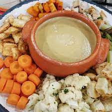
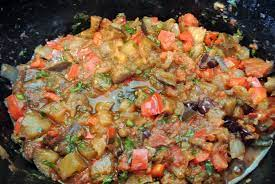

.jpg)
.jpg)
.jpg)
il Tanito
Bagna cauda
Este plato se origina en la zona del Bajo Piamonte, llamada Monferrato, y según la tradición se consumía después de la fatiga de la vendimia y la vinificación. Los viñateros, campesinos, familiares y amigos se sentaban alrededor de un fogón a las brasas y sobre este se colocaba un recipiente de terracota (paila), dentro del cual estaba la salsa con una base de aceite de oliva, dientes de ajos triturados y pasta de anchoas saladas, calentándose sin llegar nunca a hervir –el "lujo" de las anchoas se explica porque la zona estaba en el antiguo "camino de la sal" que partía de Hyères (en la actual Francia), atravesaba los Alpes por el paso de Monviso y bajaba hasta el valle del Po. Cada comensal aportaba todo tipo de vegetales (crudos y cocidos) sobre todo el cardo jorobado de Nizza Monferrato, remolachas cocidas previamente al vapor, repollos (en particular se prefiere la col lombarda) y patatas hervidas, pimientos crudos o fritos o, mejor aún, curtidos en vinagre de vino, cebollas cocidas al horno, trozos de pan y tostadas; tradicionalmente se deben evitar las verduras aromáticas como el apio. En otras zonas del Piamonte la receta se ha enriquecido, por ejemplo en el Saluzzese donde abundan las pasturas y las vacas lecheras. De esta manera, el aceite de nuez se sustituyó por la crema de leche - nata, aunque se han seguido añadiendo trozos de nuez; en los valles en torno a Cuneo se añaden ralladuras de queso. Una evolución de la bagna se ha dado por el uso de un recipiente de terracota que tiene incluido un mechero o pequeño calentador, tal recipiente es llamado fojòt, allí se prepara y se mantiene caliente la salsa y mediante largos tenedores (de un modo semejante al de la fondue) se introducen, "bañan" y extraen los alimentos en la salsa.
Caponata
La caponata es una combinación de berenjenas y tomate que se encuentra en otras cocinas mediterráneas como puede ser la ratatouia provenzal, el pisto manchego, la kapunata de Malta, el tumbet mallorquín y las diferentes variantes de moussakas encontradas en el mediterráneo oriental. En la actualidad puede encontrarse este condimento en diversas recetas de pasta italiana. En los países de Europa central (República de Eslovaquia, Hungría y Austria) es conocido como lečo, lecsó o Letscho.